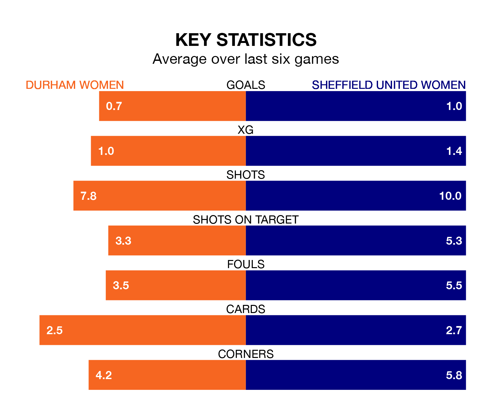

Sheffield United Women come to Maiden Castle Sports Park to play Durham Women on Sunday lunchtime in poor form, having collected just four points from their last six games.
The visitors have won one and drawn one of their last six fixtures, while Durham have two wins and a draw.
In Isobel Goodwin, Sheffield United have one of the league's most on-form strikers so far this season. She has notched seven goals in 12 appearances, to sit second in the scoring charts.
Durham's top scorers, with three goals each, are Eleanor Doyle and Amy Andrews.
In the last 10 years, Durham and Sheffield United have played each other on 14 occasions. They won five each, and they drew four times.
On average, Durham scored 1.4 goals and the Blades 1.3 in those matches.
Their last meeting was on November 23, when they played out a 1-1 draw.
With 13 goals in 14 games so far this season, the hosts are scoring at below the league average rate with 0.9 goals per game. And they are conceding more than average, letting in 23 goals at a rate of 1.6 per game.
The Blades are also below average scorers, with 1.2 goals per game, compared to a league average of 1.3. They have conceded 1.5 goals per game.
The away side are eighth in the table after 13 games, of which they have won four and drawn two, earning 14 points.
Durham are two places ahead of Sheffield United in sixth, with five wins and three draws putting them on 18 points.
Durham's last match was on January 28, a 2-0 loss against Watford Women.
Sheffield United lost 1-0 against Southampton Women last time out, also on Sunday.
Updated: 10:03 (UTC), 30/01/24